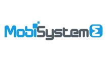
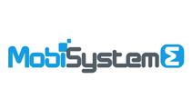

Blackbox Connect October 2013
Eight startups, from around the world, selected by Blackbox will participate in the Fall 2013 program (October 7-18)
Selected companies and entrepreneurs


:Latin America’s leading Venture Capital firm, MadeiraMadeira: Brazil’s leading home improvement online retailer backed by Kaszek Ventures, Monashees and Flybridge.") 



Ricard Dorado Chile

Benchbanking
Co-founder of Benchbanking. Executive with a strong track record of international business leadership in telecom-internet-media and retail companies. CXOs contact across them in Latin America and Europe. More than 10 years of experience building and leading cross-functional teams in product marketing & management, business development, sales and technology, in both, start-up and corporate companies.
Matías Fontecilla Chile

Benchbanking
Co-Founder and Chief Commercial Officer in BenchBanking leading every aspect of sales, account management and user experience. At age 18, he created a marketplace for exotic animal exchange between zoos. He studied Business, then worked in Chilean Central Bank, The Nielsen Company and FASA before returning to his entrepreneurial roots by founding a Marketing and Strategy Consulting firm.
Alex Bartzis Australia

Cookoo
Alex is the co-founder of Cookoo with a dynamic and enthusiastic passion to design innovative solutions for the everyday person. He is a lover of food, protein and staying very active which has provided him with the vision for Cookoo. He believes in success through the user interface and has been responsible for the development of the look and feel of Cookoo.
Raj Prasad Australia

Cookoo
Raj Prasad is the co-founder of Cookoo, an entrepreneur with a passion for food and innovation; Raj’s career spans from expertise in M&A transactions to restructuring advice. MBA holder, his skills in business model innovation and strategy coupled with a creative business mind has made him a valuable member of the Cookoo team.
Chalermyuth Boonma Thailand

Fastinflow
Co-founder of Fastinflow. A visionary digital marketer! Keen on digital marketing, social media marketing, and also passionate about building something that could influence the way people live. He experienced working with successful brands, advertising companies and tech startups including Ensogo (Livingsocial) and Zalora (Rocket Internet). He had also been heavily involved building the Thailand tech startup ecosystem.
Jakkarin Pipopkullaporn Thailand

Fastinflow
Co-founder of Fastinflow. A strategic thinker who loves numbers! Passionate about startups and new business opportunities. Currently, he is especially interested in digital products as they make people live a better life. He led Polymer R team and won first runner up in MAI business plan competition. He got his first degree with honours in BBA Finance.
Santiago Fossatti Argentina

Kaszek Ventures
Associate at Kaszek Ventures, Latin America’s leading Venture Capital firm. As Kaszek’s first employee, focused on sourcing new deals for the fund, Santiago has participated in 40 investments rounds for over $400M. Santiago was previously an associate at Value Partners where he worked in several engagements for leading telco industries. Santiago got an Industrial Engineering degree.
Daniel Scandian Brazil

Madeiramadeira
Co-founder and CEO of MadeiraMadeira, Brazil’s leading home improvement online retailer backed by Kaszek Ventures, Monashees and Flybridge. Before founding MadeiraMadeira, Daniel was the R&D director for Novopiso, a leading flooring company in Brazil. Daniel holds a B.S. in Production Engineering and also was a professional Racing Driver.
Philippe Lebeau France

Mobisysteme
Co-founder of Mobisystème. He brings nearly 25 years of experience in designing marketing campaigns with impact. Philippe combined his penchant for outdoor sports and entrepreneurial spirit to create Aerocom, an advertising agency for the best suppliers of mountaineering and outdoor sports gear in Europe. He also managed the adoption of Annecy on the shortlist of cities to host the 2018 Winter Olympics.
Richard Phan France

Mobisysteme
Co-founder of Mobisystème. Richard Phan was Program Director at Palm, where he lead worldwide 3G smartphone R&D programs. Prior to this, Richard spent 7 years in Silicon Valley, working for HP and Handspring in R&D, manufacturing, and operations. Richard holds an Engineering degree in Computer Science, Electrical Engineering, and has a very rich multicultural background.
Cosmin Ciobanu Romania

Octonius
CEO & Founder of Octonius, enthusiast entrepreneur and UX creator. With a background of mobile UX & UI design, data privacy & security, he specialized in GTDs, productivity systems and workflows. Very focused on simplicity design. He is a renaissance man, with a passion for history of arts, hiking and climbing.
Cristian Ivan Romania

Octonius
CTO & Co-founder of Octonius, iOS developer and UX expert. Pixel perfect enthusiast. An IT polymath with a background from the humble beginnings of the UNIX to the core of the iOS platform.
Arjun Pillai India

Profoundis
Co-founder, CEO & Hustler@Profoundis, Undergraduate in Electronics and Communication. He's been Systems Engineer for 2 years as an SAP Developer. Arjun is a management aspirant. He is proactive, loves to build teams and sustain them. His role is to drive the business operations of Profoundis. Good communication, presentation and oratory skills add up his relevance to the team.
Jofin Joseph India

Profoundis
Co-founder, COO @Profoundis, Jofin is an undergraduate in Computer Science and Engineering. His areas of experience include enterprise systems, business analytics software and business process management systems. He founded a startup called Openode Labs along with his college mates . He is an enthusiastic team player and a blend of technical and functional skills.
Ivana Gadjanski Serbia

Pubsonic
Ivana is co-founder and Chief Scientific Officer of Pubsonic, a stem cell research scientist with a PhD in Biology - Max Planck Institute & LMU, Germany; Fulbright fellow – Columbia University; TED Global Fellow 2012 and TEDMED Front Line Scholar 2013.
Vladan Petrovic Serbia

Pubsonic
Vladan is co-founder and CTO of Pubsonic managing product development. As a senior web and mobile developer he has worked on projects from enterprise Portal/ERP solutions to E-Banking systems for Swiss banks. In last few years he was helping startups from Serbia, Japan, Australia and Germany to build their products.